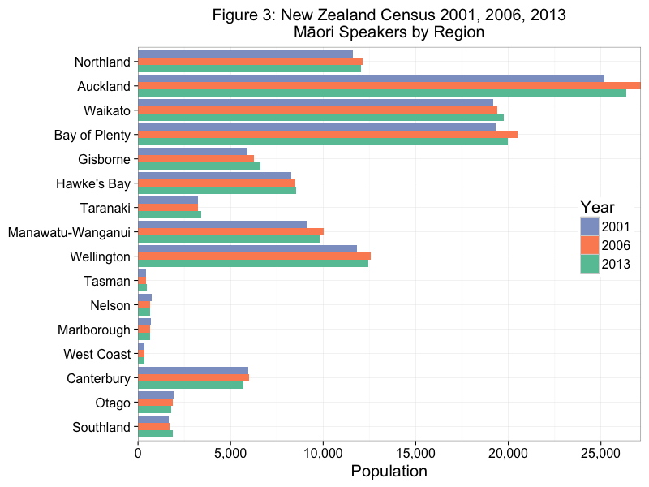
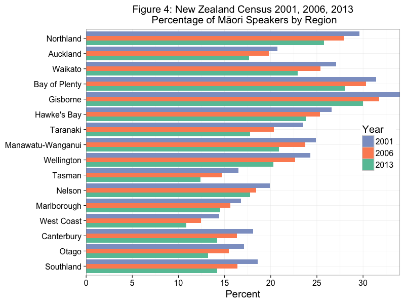
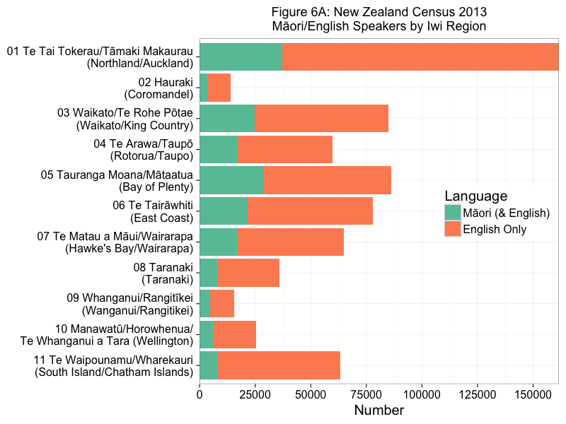
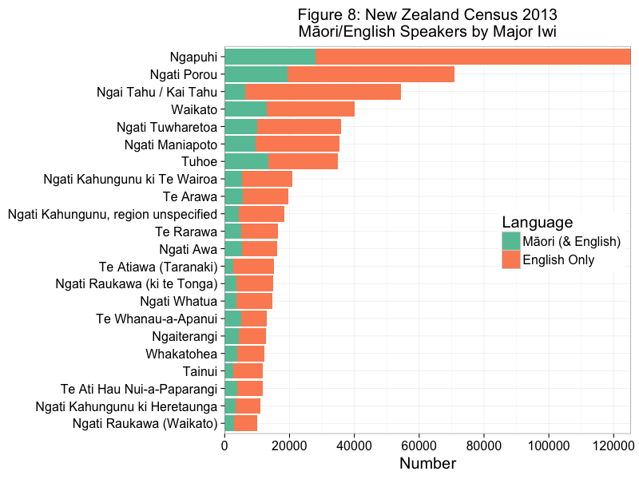
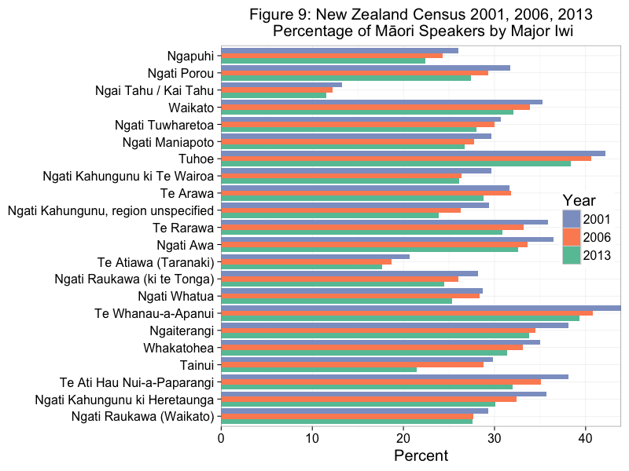

Understanding Māori language statistics from New Zealand Census Data
(1st version, 4 February 2014, last updated 4 Jan 2017)
Māori language stats from New Zealand Census data (mostly 2001, 2006, 2013)
Due to the Christchurch earthquake in 2011, the NZ Census time series is irregular. I am mainly interested in trends, not absolute numbers. I suspect that there is a lot of over reporting on the language question.
Overview, the big picture
Figure 1 presents the number of Māori by descent, ethnicity and Māori language speakers (only those claiming Māori ethnicity), from 1991 and includes a rough projection to 2018.

Language use question was first used in 1996. Figure 1, shows there has been a reasonably consistent increase in the number of Māori claiming Māori descent and Māori ethnicity, but a slight increase (until 2006) and then steady decrease in the number of Māori language speakers.
Māori Language Speakers by 4 Age Groups
Figure 2 presents Māori language speakers (only those of Māori ethnicity) by 4 age groups.

Figure 2 clearly shows that in terms of absolute numbers there have been reasonably consistent decreases in the two younger age groups. The group over the age of 64 slightly increased. The middle age group (30 to 64) increased in 2006, but then decreased in 2013.
Māori Language Speakers by NZ Census Regions
Figure 3 displays the number of Māori language speakers by Region, from 2001 to 2013.

The Bay of Plenty, Gisborne, Waikato and Northland have always had large Māori populations and the South Island has a very low Māori population. Auckland now has a large number of Māori residents as a result of internal migration.
It appears that in many regions there were slight increases in 2006, but consistent decreases in 2013. More on this below.
Figure 4 displays the percentage of Māori language speakers by region. I.e., what percentage of the Māori population (in that region) claim to be speakers of Māori.

There are larger percentages of Māori speakers where there are higher percentages of Māori. The reasons for this are largely historic and largely reflect delayed language shift in rural areas where Māori communities are more isolated.
Figure 5 displays percentage of speakers by the percentage of the population for each region as a scatter plot. In some ways this is kind of collapsing or combining figures 3 and 4.

There is a positive correlation between these variables.
Note that there is a lot of variation within regions such as Auckland and the Bay of Plenty. More on this later.
Māori Language Speakers by Census Iwi Regions
Māori usually identify with multiple iwi (tribes), with the average around 2.3/2.4.
The 11 Iwi Regions should be regarded as 'Iwi Region of Origin' as the vast majority of Māori now live outside of their Iwi region.
Iwi regions are combinations or groups of related iwi.
Figure 6A presents the number of Māori and English speakers by iwi region in 2013.

All Māori speakers are speakers of English, so English (orange) really means English only.
The bay of Plenty of region has the highest proportion of Māori speakers. The South Island/Chatham Islands has the lowest proportion of Māori speakers.
Some regions, such as Hauraki, Whanganui/Rangitikei have small iwi region populations.
Figure 6B is figure 6A reordered by the highest number of Māori speakers in that iwi region.

Figure 6B is much clearer than figure 6A.
Figure 7 presents the percentage of Māori speakers by iwi region from 2001 to 2013.

There has been a consistent decrease in the percentage of Māori speakers in each iwi region from 2001 to 2013.
Māori Language Speakers by Major Iwi
Major iwi here means iwi with over 10,000 (this figure is arbitrary) in 2013.
NZ Stats recognizes over 120 iwi. Iwi classification has changed slightly since 2001.
Remember many identify with more than one iwi. I am counted three times belonging to Ngati Porou, Waikato and Ngati Maniapoto.
Figure 8 presents the number of Māori and English speakers by iwi.

Clearly Ngapuhi is most numerous iwi with a large number of speakers.
Ngai Tahu is the 3rd largest iwi, but has a very low proportion of Māori speakers. Tuhoe, a reasonably sized iwi has the highest proportion of Māori speakers. Te Whanau a Apanui is a smaller iwi, but still has a high proportion of Māori speakers.
Figure 9 presents the percentage of Māori speakers by major iwi, from 2001 to 2013.

The percentage of Māori speakers (by major iwi) has generally declined from 2001 to 2013. Te Arawa slightly increased in 2006. Ngati Raukawa (Waikato) had a very small decrease between 2006 and 2013.
Understanding Te Kupenga 2013 Data
Te Kupenga is a post census survey that was completed after the 2013 Census.
Below is my first plot from Te Kupenga Data.
Figure 10 presents the oral proficiency of Māori speakers by major iwi.
Clearly Tuhoe have much higher percentages of iwi members that speak Māori very well or well. Conversely Ngai Tahu have very low percentages of iwi members that speak Māori very well or well. This is not surprising to those familiar with Māori speakers in NZ.
More to come later in 2017.
Figures were done in R (ggplot2) using RStudio on a iMac. Github repo is here. Figures were exported from RStudio.